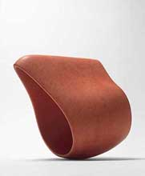
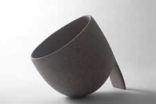
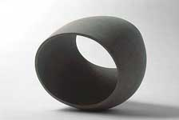
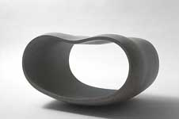
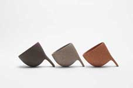
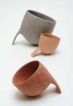
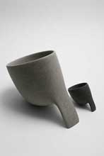

|
Deirdre McLoughlin
Irish ceramist resident in The Netherlands

Photos: Rob Bohle
Irish
ceramist Deirdre McLoughlin makes high-fired biomorphic sculpture,
which is polished with diamond pads.
McLoughlin received a BA from Trinity College, Dublin in 1972,
before travelling to Amsterdam, The Netherlands, where Rosemary
Andrews’ sculptures inspired her to work with clay. She shared
a studio in Dublin with Anthony O’Brien and Jim Galligan from
1974-82, during which time Sonja Landweer was her mentor. In 1982
the work of the Sodeisha Group and a sculpture by Isamu Noguchi
brought her to Kyoto, Japan, where she established a studio and
took classes with the Kyoyaki master Tousai Sawamura. In 1985 she
returned to Dublin, where she worked until moving to Amsterdam in
1988.
McLoughlin has acted as External Examiner in the National College
of Art and Design, Dublin, was a visiting lecturer and artist in
a number of sculpture and ceramic departments and has given Master
Class Workshops in the Fire Station Artists Studios Dublin. Her
awards include an Alexander Foundation Grant (Switzerland) in 2000
and a Westerwald Prize in 2004. She is a member of the Sculptors’
Collective of Amsterdam, the Sculptors’ Society of Ireland
and Irish Contemporary Ceramics.


Jury's Statement, Westerwaldpreis 2004.
"Balance and harmony, poise and contrast in each of the individual
forms as well as in the interplay of the two vessels determine the
first impression here. With a powerful formal language as well as
proportion and fragility of the vessel types, they present themselves
as sculptural objects, spatial bodies".


"In addition, unspectactular and inconspicuous, there is
the elegance of the material component, of the exquisite technique
which also corresponds to the language of ideas: finest marble seems
to have been used rather than clay, warmth and skin-like surfaces
are to be found where unglazed surface defines spatial volume. Unpretentiously,
nonsense is made of the ceramic discussion about vessel and sculpture".
Website: http://www.deirdremcloughlin.com
More Featured Artists
More Articles
|
{kind=link}
{kind=link}
{kind=link}
{kind=link}
{kind=link}
{kind=link}
{kind=link}